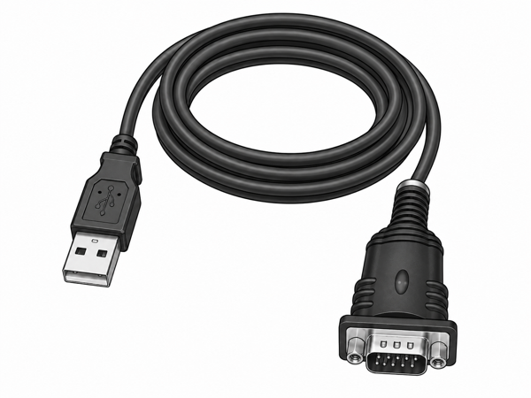

なぜ必要か
便利と事故は、紙一重。
一般的な MCP の SSH サーバーは、エージェントの指示をそのまま実行します。
判断ミスやプロンプトインジェクションが一発で、rm -rf や systemctl stop を本番で走らせ得る構造です。
SSH GATE は、その間に「人間が見て承認する画面」を1枚はさみます。
| 素の SSH ツール | SSH GATE | |
|---|---|---|
| エージェントの指示 | 即実行 | 承認キューに保留 |
| Low リスクのコマンド | 自動で実行 | それでも承認必須 |
| 誰が・何を・なぜ | 残りにくい | 全件 SQLite に記録 |
| 信頼できるエージェント | — | 承認省略を段階的に付与 |
| 通信範囲 | — | 既定 127.0.0.1 のみ |
判断と実行の引き金は、人間（または人間が事前に信頼を与えたエージェント）の手に残す。それだけのことを、確実に。
機能
承認コンソールに必要なもの、ぜんぶ。
- 1
人間承認ゲートウェイ
エージェントの要求は承認キューへ。GUI で内容を確認し、必要ならコマンドを微修正してから実行できます。
- 2
MCP サーバー内蔵
JSON-RPC 2.0 over HTTP で
list_hosts/execute_commandなどを提供。Claude などの MCP クライアントから接続できます。 - 3
リスク分類
コマンドを High / Medium / Low に推定して表示。人間の判断を助けます（あくまで目安。実行可否は承認とポリシーが決めます）。
- 4
監査ログ
すべての要求・実行結果・所要時間を SQLite に記録。接続先を消しても履歴は残します。
- 5
ライブターミナル（SSH / シリアル）
承認フローとは別に、人間が直接操作する対話端末を内蔵。SSH の対話シェルとシリアルポートを、同じ画面で扱えます。
- 6
ローカル完結 & 最小保持
既定の待受は
127.0.0.1:8787。SSH 鍵パスフレーズは保存せずメモリのみ。任意で Bearer 認証も。
仕組み
エージェントと実機の間に、門番を置く。
人間が操作する GUI、状態を所有する Go バックエンド、機械が話す MCP。承認関門はその真ん中にあります。要求から実行までは、こう流れます。
- エージェントが要求する —
execute_commandでホスト・コマンド・理由を申請。 - 承認キューにためる — 実行せず保留し、リスクを付けて GUI に表示。
- 人間が承認する — 内容を確認し、必要なら微修正して「承認して実行」。
- 実行して記録する — SSH 実行。結果と所要時間を監査ログに残す。
ターミナル
SSH も シリアルも、ひとつの画面で。
承認フローに乗らない「人間の直接操作」も用意しています。接続先に種別（SSH / シリアル）を持たせ、ターミナルはそれに従属。 ネットワーク機器のコンソールや USB シリアルも、SSH の対話シェルと同じ操作で開けます。 シリアル接続先は MCP からは実行できません（対話 GUI 専用）。

安全設計
安全は、1個ではなく層で積む。
- ✓
デフォルト承認必須
Low リスクでも自動実行しない。
AutoExecuteLowRiskはバックエンドとフロントの二重で false に固定。 - ✓
エージェント名の必須化
誰の要求かを必ず記録。未申告のエージェントには承認省略を付与できません。
- ✓
出力上限とタイムアウト
stdout/stderr を上限で打ち切り、接続・コマンドにタイムアウト。超過時は確実に kill。
- ✓
資格情報の最小保持
SSH 鍵パスフレーズはメモリのみ（DB 非保存）。トークンはマスク表示で平文を返しません。
オープンソース
大事な SSH／シリアルだからこそ、中身が見える。
承認をすり抜けて実行する裏口がないか。資格情報をこっそり外へ送っていないか。 —— サーバーの鍵やコンソールを預ける道具がブラックボックスでは、意味がありません。 SSH GATE はソースを丸ごと公開しています（MIT ライセンス。商用利用・改変・再配布OK）。 動作はローカルだけで完結し、外部に何も送りません。気になる挙動は、コードでそのまま確かめられます。
FAQ
よくある質問
もっと詳しい紹介・背景は？
※ 限定共有リンクです。
本当にエージェントから勝手に実行されませんか？
リスク分類（High/Medium/Low）はどこまで信用できますか？
外部に公開されますか？
127.0.0.1:8787。ローカルのエージェントとだけ通信する前提です。必要に応じて Bearer 認証・ボディサイズ上限・CORS 制限を設定できます。シリアルポートにも使えますか？
資格情報はどこに保存されますか？
0700 のディレクトリに置かれます。保証はありますか？
開発元
開発元について
QuickIterate Co., Ltd. が開発しています。日々の小さな摩擦を、確実に取り除く道具づくりを続けています。
ソースコード・課題・要望は GitHub リポジトリ へ。
ダウンロード
単一ファイルで、すぐ使える。
インストール後、サイドバーの「コマンド履歴・承認」や「ターミナル」からそのまま使えます。
.app を右クリック →「開く」で許可してください。初回起動の注意（Windows）：未署名のため SmartScreen が出る場合は「詳細情報」→「実行」で起動できます。
ソースからビルド：
wails build（Go 1.25 / Node が必要）。詳細は GitHub の README を参照。ライセンスは MIT（商用利用・改変・再配布OK）。
無保証（AS IS）：本ソフトウェアは現状有姿で提供され、明示・黙示を問わず一切の保証はありません。生じた損害について作者・配布者は責任を負いません。利用は自己責任でお願いします。